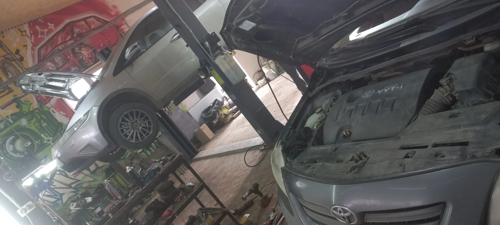
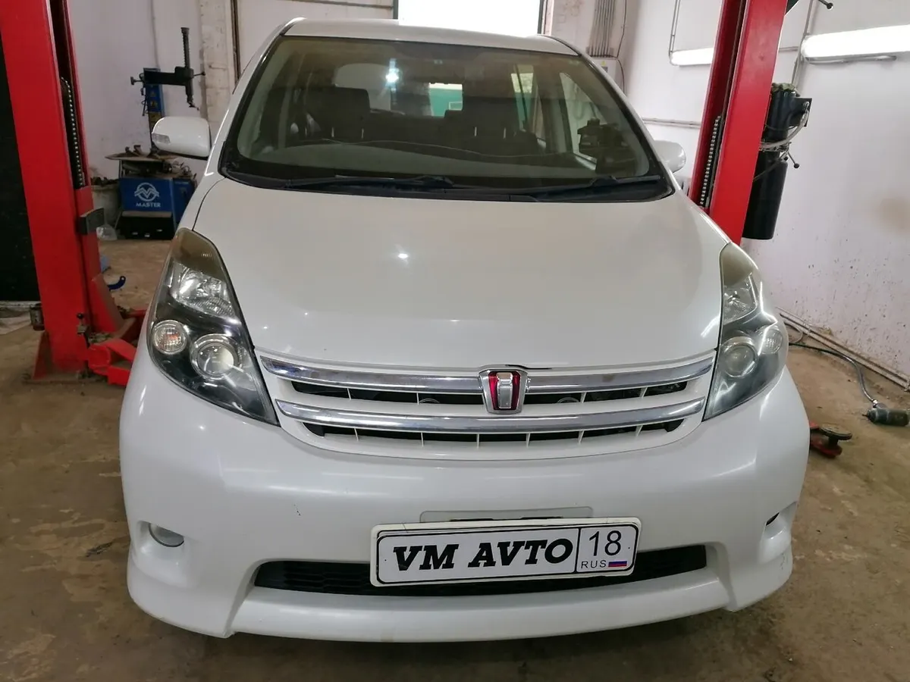
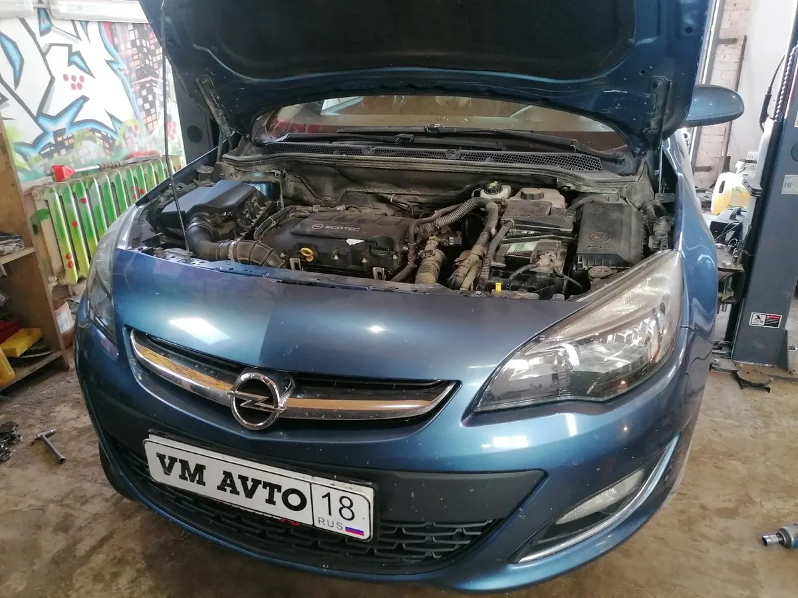
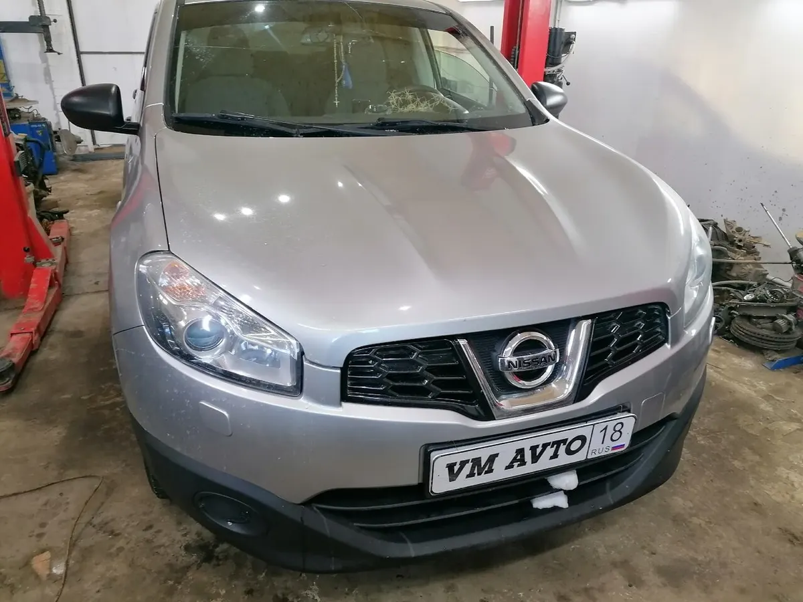

Автосервис, шиномонтаж, эвакуатор и авторазбор
VM AVTO – автосервис и шиномонтаж в Ижевске
Ремонт автомобилей, шиномонтаж, авторазбор и эвакуатор. Выберите нужные услуги и согласуйте время обращения.
Ижевск, Торфяная, 1+7 (951) 207-24-44
- Шиномонтаж, ремонт и авторазбор в одном месте
- Свой эвакуатор
- 4,7 на Яндекс Картах

Услуги и цены
Точную стоимость называем после осмотра машины: она зависит от марки, года и запчастей.
Шины и колёса
- Шиномонтажуточнить
Ремонт
- Ремонт ходовой частиуточнить
- Ремонт двигателяуточнить
- Шумо- и виброизоляцияуточнить
Запчасти и эвакуатор
- Запчасти под заказ, авторазборуточнить
- Эвакуаторуточнить
Услуги по данным карточки на Яндекс Картах и вывеске сервиса. Цены уточняйте по телефону.
Как проходит визит
- 01
Написали или позвонили
Марка, год и что беспокоит – этого достаточно, чтобы договориться о времени.
- 02
Приехали на Торфяную, 1
Работаем в будни с 9:00 до 18:00. Машину принимает мастер.
- 03
Мастер смотрит машину
Называет, что нужно сделать. Запчасти можно заказать через сервис.
- 04
Забираете машину
Сдвинулся срок или всплыла новая работа – об этом говорит мастер.



Что говорят клиенты
Без накрутки лишней работы
Так пишут в отзывах на Яндекс Картах – ниже можно прочитать их целиком.
Помогают, когда срочно
Клиенты отмечают, что сервис выручил, когда ремонт нужен был быстро.
Подскажут по запчастям
Мастера советуют, какие запчасти надёжнее, и могут заказать сами.
Свой эвакуатор и авторазбор
Если машина не на ходу, сервис может помочь с доставкой. Нужная деталь может найтись на разборе.
Отзывы с Яндекс.Карт
«Отличные мастера, свое дело знают. Без навязывания, накрутки лишней работы. Работают честно! Находим общий язык, что для женщин, не сильно понимающих в машине, очень важно.»
Анастасия · 29 августа
«Лучший сервис этого города , сначала делали мне аутлендер сейчас продал купил цивик тоже гоняю сюда , компитентные парни Максим Вадим и Костя , спецы своего дела»
Дима Рожнев · 8 июля 2024
«Очень выручили, когда нужно было сделать ремонт СРОЧНО!!»
Елена Вахрушева · 26 декабря 2024
Отзывы с карточки на Яндекс.Картах, без правок.
Запишитесь в сервис на удобное время
- Адрес
- Торфяная улица, 1, Ижевске
- Часы
- Пн-Пт 9:00-18:00
- Телефон
- +7 (951) 207-24-44